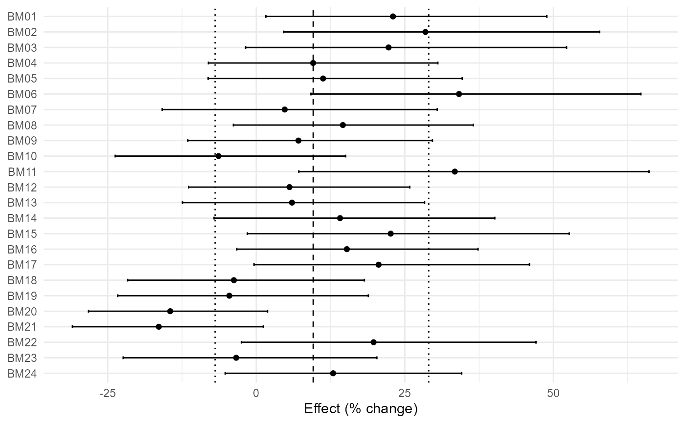
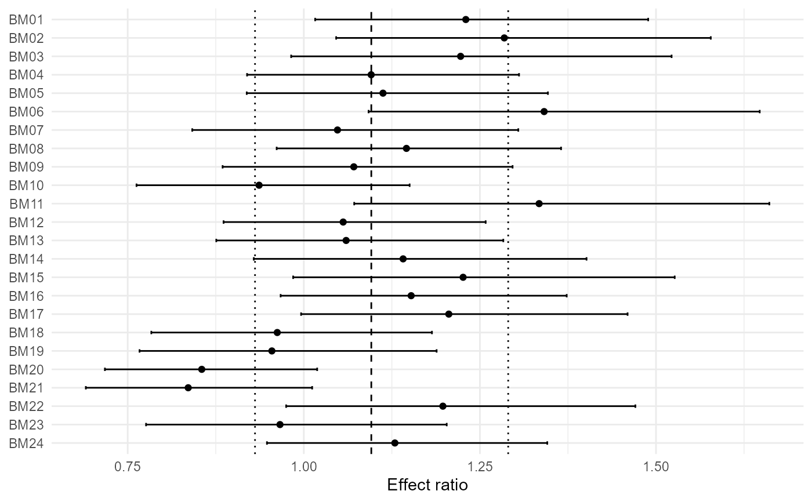

Draw a publication-quality forest plot
apm_forest.RdDraw a publication-quality forest plot. This conservative manual snapshot is regenerated from the authoritative roxygen source before release.
Usage
apm_forest(model, data = NULL, slab = NULL, transform = c("auto", "none", "exp", "percent"), sort = NULL, subgroup = NULL, prediction = TRUE, columns = NULL, interactive = FALSE, theme = "agri")Examples
# Example 1: percent-change forest plot with crop metadata.
apm_forest(apm_fit(agri_effects_benchmark), transform="percent", columns=c("crop","dose"))
#> `height` was translated to `width`.

# Example 2: forest plot with soil-texture grouping metadata.
apm_forest(apm_fit(agri_effects_benchmark), subgroup="soil_texture", prediction=TRUE)
#> `height` was translated to `width`.

# Example 3: interactive forest plot when plotly is installed.
if (requireNamespace("plotly", quietly=TRUE)) apm_forest(apm_fit(agri_effects_benchmark), interactive=TRUE)
#> `height` was translated to `width`.